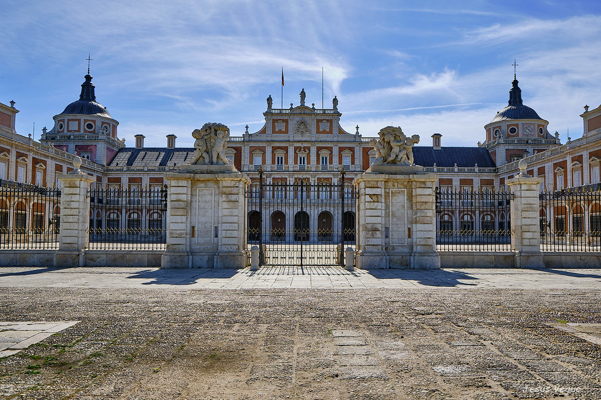

Madrid: Huellas de su Historia
|
En la segunda mitad del siglo IX, el emir Muhammad I (852-886) mandó construir una fortaleza en la orilla del Manzanares, conocida en los textos árabes como Mayrit (Magerit en su forma castellanizada).
Sin embargo, Madrid no cobró verdadera importancia hasta que Felipe II trasladó allí la Corte en 1561. Los inicios de Madrid como capital de la Corte hicieron patente la necesidad de reformas urbanísticas, y pronto surgieron arrabales fuera del recinto medieval que cambiaron el rumbo de la historia de Madrid. Durante los siglos XVI y XVIII, periodo conocido como el Madrid de los Austrias, la capital se llenó de importantes construcciones, como la Plaza Mayor, la cárcel de la Corte y el Ayuntamiento, además de numerosas iglesias. Desde 1706, Madrid permaneció fiel a los Borbones y, en recompensa, los monarcas hicieron de ella la capital de un estado centralizado con todas las ventajas que ello suponía. Urbanísticamente, el Madrid de los Borbones experimentó notables mejoras. Durante el reinado de Felipe V se construyó el Puente de Toledo y se inició la construcción del Palacio Real (1737) que debía sustituir al alcázar, incendiado en 1734. Fernando VI y, en especial, Carlos III pusieron gran empeño en las obras de saneamiento y embellecimiento de la ciudad |
Vive la Historia de Madrid
| Para daros consejos sobre como realizar una visita histórica a Madrid y disfrutarla al máximo, vamos a dividirlo en dos periodos, pero te invitamos a conocer a tu gusto todo lo que ofrece la Villa. |
El Madrid de los Austrias
|
El Madrid más antiguo combina la huella dinástica del Palacio Real con el aire popular de la Plaza Mayor y sus alrededores Lugar donde podemos ver edificios de los siglos XV, XVI y XVII como la Casa de la Villa (antigua sede del Ayuntamiento), la Torre de los Lujanes y la Casa de Cisneros son los principales conjuntos arquitectónicos levantados en tiempos de la monarquía de los Habsburgo que merece la pena contemplar. Otro lugar que conviene visitar es el Monasterio de las Descalzas Reales. Reconvertido hoy en convento de monjas y antigua sede real del monarca Carlos I, cuenta con una exposición permanente de obras de arte del siglo XVI en adelante. Además, el Palacio de Santa Cruz, construido en 1629, alberga hoy la sede del Ministerio de Asuntos Exteriores. Además, desde Madrid vive nos gustaría recomendarte enclaves historicos y artísticos de renombre mundial como el Monasterio de Sán Lorenzo del Escorial (a algo menos de 1 hora de Madrid capital) y El Museo de la historia de Madrid. |
||
El Madrid de los Borbones
|
El Madrid de los Borbones es la zona que abarca desde Atocha, atravesando el Paseo del Prado hasta llegar a Recoletos. Una zona que vio su esplendor en el siglo XVIII con la llegada de la dinastía de los Borbones y sobre todo con el rey Carlos III. Os adentrareis en un Madrid misterioso y oculto, muy diferente a aquel Madrid del rey Carlos III donde se respiraba el neoclasicismo y las ideas de la Ilustración por doquier. descubrireis el lado más señorial, noble y aristocrático de Madrid, donde podreis sentiros por un momento como la alta sociedad del s.XVIII, ademas de conocer las historias, comidillas y correveidiles del pueblo castizo y empaparos de esencia de la Villa. Desde Madrid Vive creemos imprescindibles para conocer el lado neoclásicista de Madrid la visita al Palacio Real, El Palacio de Liria, la Basilica de San Francisco el Grande y para el que tenga la oportunidad, conocer el Palacio de Aranjuez y sus vibrantes jardines. |
|  |
 +34 915 787 810 +34 915 787 810 |
 turismo@esmadrid.com turismo@esmadrid.com |
@visita_madrid |